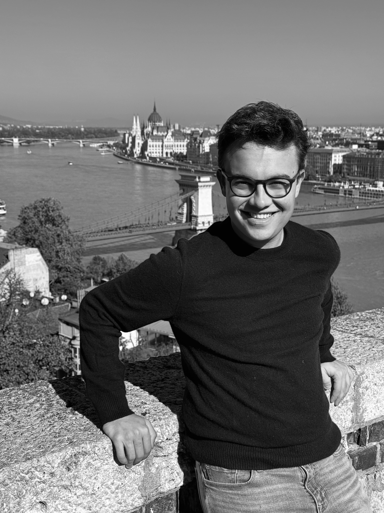
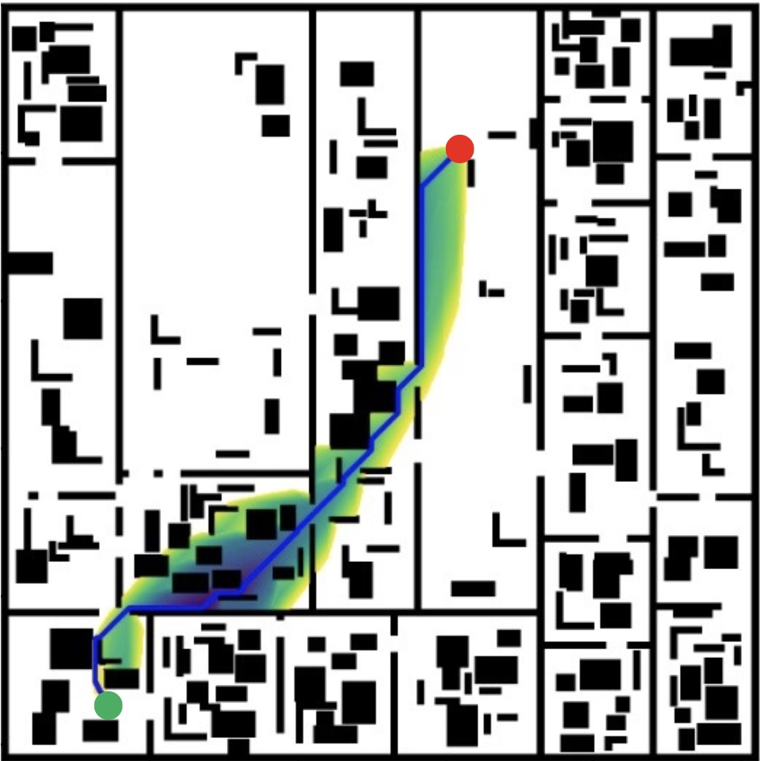
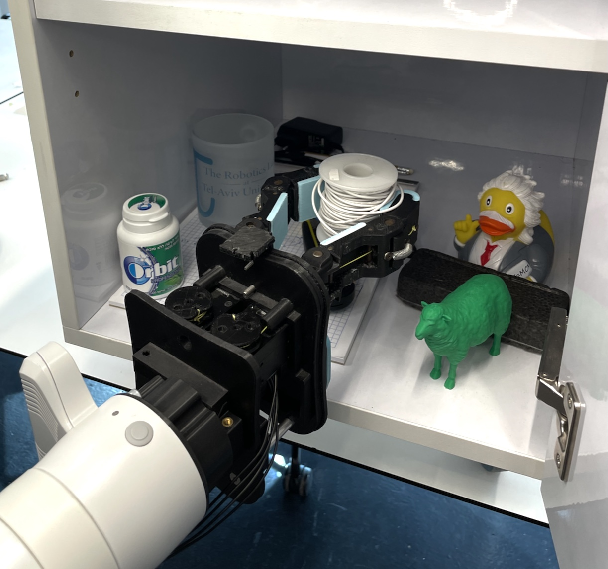

Undergraduate, Electrical and Computer Engineering & Robotics, CMU
Email: juliusa [at] cmu [dot] edu
Phone: (617) 992-8096
1612E Newell-Simon Hall, 5000 Forbes Ave, Pittsburgh, PA, 15213
CV: Download
Hello! I'm Julius, a junior at Carnegie Mellon studying ECE and Robotics. I do research at CMU's Robotics Institute on motion planning under Professor Maxim Likachev at the Search-Based Planning Lab, and under Professor Howie Choset in the Biorobotics Lab.
I am interested in applying in solving problems to allow systems to plan under uncertainty and leverage learning to make more informed decisions. More broadly, I am interested in building intelligent systems that help people.
Previously, I spent time in summer of 2023 at Tel Aviv University's Robotics Lab doing work on learning for object recognition with underactuated hands, and more recently spent summer of 2024 at Johnson & Johnson doing systems integration work for robotic manipulators on Ottava.
I enjoy traveling and learning languages. I speak English, Russian, Dutch, and French. Originally from Israel, I'm actively involved in Jewish life on CMU's campus, where I serve as President of CMU's Hillel. I also enjoy playing classical piano.

Authors: Julius Arolovitch*, Itamar Mishani*, Ramkumar Natarajan, Maxim Likachev
Under Review, International Conference on Automated Planning and Scheduling (ICAPS) 2025
Download PDF
Authors: Julius Arolovitch*, Osher Azulay*, Avishai Sintov
IEEE International Conference on Robotics and Automation (ICRA) 2024
ArXiv | Download PDF